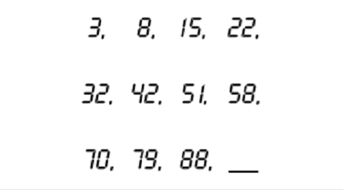

Задача для скорости мышления
Какое минимальное количество палочек надо переместить, чтобы получилось корректное математическое уравнение?
Задача на нестандартное мышление
Какое число следующее?

Задача на логическое мышление
По аналогии с филвордом Вам нужно найти спрятанные среди цифр ответы на приведенные подсказки.
Ответы могут быть приведены в прямом или обратном порядке, расположены в горизонтальном, вертикальном или диагональном направлении, но обязательно по прямой и без разрывов.
Чтобы получить от выполнения этой задачи максимальную пользу, выполняйте математические действия без калькулятора! Потренируйтесь в умножении больших чисел. Сможете ли проделать в уме все операции сложения? Попытаться стоит, так как это — отличный стимулятор деятельности клеток мозга.